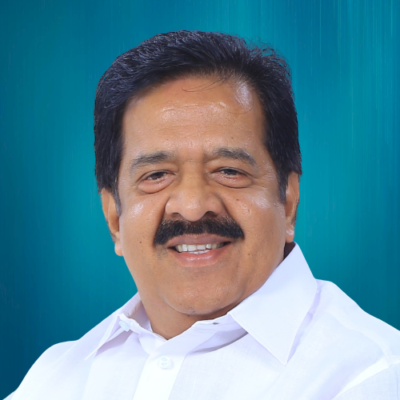

MINISTERS

Shri Ramesh Chennithala
Minister for Home, Vigilance, Fire and Rescue Services, Prisons and Coir.
Read More


Smt. K A Thulasi
Minister for Development of Scheduled Castes, Scheduled Tribes and Backward Classes.
Read More
Smt. Bindhu Krishna
Minister for Labour, Women and Child Development, and Animal Husbandry.
Read More

Shri Roji M JohnS
Minister for Collegiate Education , Technical Education , Universities (Except Agricultural, Veterinary, Fisheries, Medical and Digital Universities) , Entrance Examination , National Cadet Corps and Additional Skill Acquisition Programme (ASAP) Kerala
Read More
Shri T Siddique
Minister for Agriculture , Soil Survey & Soil Conservation, Kerala Agricultural University and Warehousing Corporation
Read More
Shri N Samsudheen
Minister for General Education , Literacy Movement , Wakf and Haj , Pilgrimage and Minority Welfare
Read More
Shri K M Shaji
Minister for Panchayat , Municipality , Corporation , Town Planning , Rural development , Regional Development Authorities and KILA
Read More


Shri Mons Joseph
Minister for Irrigation , Command Area Development Authority (CADA) , Ground Water Department , Water Supply & Sanitation and Housing
Read More

Shri Shibu Baby John
Minister for Forests & Wild Life Protection , Skill Development and Kerala Academy for Skills Excellence (KASE)
Read More
Shri C P John
Minister for Road Transport , Motor Vehicles and Water Transport Read More